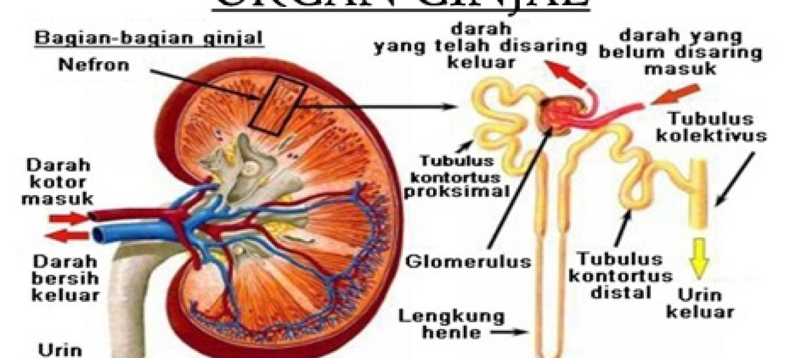

GINJAL
Ginjal adalah organ penting yang menjadi bagian utama sistem pengeluaran urin pada manusia. Manusia memiliki sepasang ginjal berukuran sekitar 10 cm yang berada di rongga perut, di sebelah kiri dan kanan ruas tulang pinggang. Ginjal bertugas menyaring sisa metabolisme dari darah, menjaga kadar udara tubuh, mengeluarkan gula berlebih, serta menyeimbangkan kadar asam, basa, dan garam di dalam tubuh.
Ginjal adalah organ berbentuk seperti kacang merah yang merupakan bagian utama dari sistem ekskresi (pembuangan) dan sistem urinaria pada manusia dan hewan vertebrata.
Secara sederhana, ginjal adalah "pabrik penyaring" atau "filter" canggih di dalam tubuh kita. Tugas utamanya adalah membersihkan darah dengan cara membuang zat-zat sisa yang tidak berguna dan kelebihan cairan, lalu mengubahnya menjadi urin (air kencing).
Analogi Sederhana:
Bayangkan ginjal Anda seperti saringan teh. Saat menyeduh teh, air panas (darah) dituangkan ke dalam cangkir yang berisi teh. Saringan akan menahan daun teh (sel darah dan protein yang dibutuhkan), tetapi membiarkan air teh yang sudah berasa (cairan sisa metabolisme) lolos. Air teh yang sudah terkumpul inilah yang kemudian menjadi urin dan dibuang.
- Struktur Ginjal
Jika ginjal dibelah secara vertikal (koronal), akan terlihat dua lapisan utama dan rongga:
- Korteks Renalis (Lapisan Kulit):
- Bagian luar yang berwarna cokelat kemerahan dan berbutir.
- Tempat di mana sebagian besar nefron (unit fungsional ginjal) berada, tepatnya korpuskel ginjal.
- Teksturnya granular karena banyaknya kapiler dan tubulus.
- Medula Renalis (Lapisan Sumsum):
- Bagian dalam yang lebih gelap dari korteks.
- Tersusun atas struktur berbentuk kerucut yang disebut Piramida Ginjal (Piramida Renalis).
- Basis piramida menghadap ke korteks, dan ujungnya (apeks) yang disebut Papila Renalis menghadap ke rongga ginjal.
- Di antara piramida ginjal, terdapat jaringan korteks yang menjorok ke dalam yang disebut Kolumna Renalis (Kolom Bertini).
- Pelvis Renalis (Rongga Ginjal):
- Rongga berbentuk corong di bagian paling dalam.
- Ujung papila renalis bermuara ke struktur kecil berbentuk cawan yang disebut Kaliks Minor. Beberapa kaliks minor bergabung
- membentuk Kaliks Mayor. Semua kaliks mayor kemudian bersatu membentuk pelvis renalis.
- Pelvis renalis akan menyempit dan keluar dari ginjal sebagai Ureter, yaitu saluran yang membawa urin menuju kandung kemih.

Gambar struktur ginjal
Sumber: :https://www.kompas.com/sains/read/2022/03/04/210000023/mengenal-struktur-ginjal-dan-fungsinya
jadi diatas adalah struktur ginjal secara umum yang terdiri dari tiga bagian.
- Fungsi Ginjal
Lebih dari sekadar menyaring, ginjal memiliki peran vital lainnya:
- Menyaring Darah: Setiap menit, sekitar 1-1,5 liter darah mengalir melalui ginjal untuk dibersihkan dari racun seperti urea (dari pemecahan protein) dan kreatinin (dari kerja otot).
- Menjaga Keseimbangan Air (Cairan): Ginjal menentukan berapa banyak air yang harus dibuang atau disimpan. Saat kita banyak minum, ginjal menghasilkan urin yang encer. Saat kita dehidrasi, ginjal menghemat air dengan membuat urin yang lebih pekat.
- Mengatur Keseimbangan Elektrolit: Ginjal menjaga kadar garam (natrium), kalium, dan kalsium dalam darah tetap stabil. Keseimbangan ini penting untuk fungsi saraf dan otot.
- Menjaga Keseimbangan Asam-Basa (pH): Ginjal membantu menjaga pH darah tetap netral dengan membuang kelebihan asam atau basa melalui urin.
- Struktur mikroskopis atau strutur dalam ginjal terdiri dari:
- Nefron adalah unit fungsional terkecil dari ginjal. Setiap ginjal manusia memiliki sekitar 1 juta nefron. Nefron terdiri dari dua komponen utama:
- Korpuskel Renalis (Badan Malpighi): Tempat filtrasi darah. Terdiri dari:
- Glomerulus: Anyaman kapiler darah tempat darah disaring.
- Kapsula Bowman: Struktur seperti cangkir yang membungkus glomerulus. Hasil filtrasi dari glomerulus akan ditampung di ruang kapsula Bowman.
- Sistem Tubulus: Saluran panjang tempat proses reabsorpsi dan sekresi terjadi. Urutan aliran cairan (urin) setelah dari kapsula Bowman adalah:
- Tubulus Kontortus Proksimal (TK Proksimal): Bagian berkelok-kelok di korteks.
- Lengkung Henle (Loop of Henle): Bagian lurus berbentuk "U" yang menjorok turun ke medula dan naik kembali ke korteks. Terdiri dari segmen desenden dan asenden.
- Tubulus Kontortus Distal (TK Distal): Bagian berkelok-kelok di korteks setelah lengkung Henle.
- Tubulus Pengumpul (Duktus Kolektivus): Beberapa TK distal bergabung ke tubulus pengumpul. Tubulus ini akan turun kembali ke medula dan bermuara di papila renalis untuk mengalirkan urin ke kaliks.

gambar struktur dalam ginjal
sumber: https://www.indonesiare.co.id/en/article/gagal-ginjal-akut
Proses Pembentukan Urin
Proses pembentukan urine di dalam ginjal melalui tiga tahapan. Ketiga tahapan tersebut adalah tahap filtrasi, tahap reabsorpsi, dan tahap augmentasi.
a. Proses Filtrasi (Penyaringan)
Lokasi: Glomerulus.
Proses:
- Darah masuk ke glomerulus melalui arteriol aferen.
- Tekanan darah yang tinggi di glomerulus memaksa air, ion-ion kecil (Na+, K+, Cl-, glukosa, asam amino), dan limbah (urea, kreatinin) untuk keluar dari kapiler glomerulus menembus membran filtrasi.
- Hasil filtrasi ini disebut filtrat glomerulus atau urin primer, yang komposisinya mirip plasma darah tanpa protein (karena sel darah dan protein berukuran besar tidak bisa lolos).
- Laju Filtrasi Glomerulus (LFG/GFR): Volume filtrat yang terbentuk per menit. Normalnya sekitar 120-125 mL/menit. Ini adalah indikator penting kesehatan ginjal.
b. Proses Reabsorpsi (Penyerapan Kembali)
Lokasi: Sepanjang tubulus ginjal (terutama di TK Proksimal).
Proses:
- Filtrat yang mengalir di tubulus mengandung banyak zat yang masih dibutuhkan tubuh.
- Zat-zat penting seperti glukosa, asam amino, vitamin, dan sebagian besar air dan ion (Na+, Cl-) diserap kembali dari cairan tubulus ke dalam pembuluh darah kapiler peritubuler (jaringan kapiler yang mengelilingi tubulus).
- TK Proksimal bertanggung jawab atas reabsorpsi 65-70% air dan natrium, serta hampir semua glukosa dan asam amino.
- Lengkung Henle berperan dalam memekatkan urin melalui mekanisme penukar arus berlawanan (countercurrent multiplier).
- TK Distal dan Duktus Kolektivus melakukan reabsorpsi air dan ion yang diatur oleh hormon (ADH dan Aldosteron).
- Hasil reabsorpsi disebut urin sekunder.
c. Proses Augmentasi (Pengeluaran Zat Tambahan)
Lokasi: Terutama di TK Proksimal dan TK Distal.
Proses:
- Kebalikan dari reabsorpsi. Zat-zat sisa atau kelebihan tertentu yang masih ada di dalam darah kapiler peritubuler dikeluarkan secara aktif ke dalam cairan tubulus.
- Zat-zat yang disekresi antara lain: ion H+ (untuk mengatur pH darah), ion K+, kreatinin, dan obat-obatan (seperti penisilin).
- Proses ini membantu membersihkan darah dari zat-zat yang tidak difiltrasi dengan baik di glomerulus.
Setelah melalui ketiga proses tersebut, cairan yang tersisa di tubulus pengumpul adalah urin sesungguhnya (urin final). Urin akan dialirkan ke pelvis renalis, lalu ke ureter, dan ditampung di kandung kemih sebelum dikeluarkan.
untuk menambah pemahaman mu tentang proses pembentukan urin simak video berikut dengan link dibawah ini:
link: https://youtu.be/qpw945e3wZo
Di awal pelajaran, kita melihat chart warna urin. Mengapa warna ini penting? Karena ginjal yang sehat akan sangat pintar mengatur kadar air.
| Warna Urin |
Artinya |
Penjelasan dari Kerja Ginjal |
| Bening/Kuning Muda |
Sehat / Terhidrasi baik |
Ginjal bekerja normal. Tubuh punya cukup air, jadi racun (urea) dilarutkan dalam banyak air sehingga warnanya encer. |
| Kuning Tua / Kuning Pekat |
Kurang minum / Dehidrasi ringan |
Ginjal menghemat air. Karena tubuh kekurangan cairan, ginjal mengonsentrasikan urin (racun sama banyaknya, tapi air sedikit), jadi warnanya pekat. |
| Cokelat / Merah Muda |
Dehidrasi berat atau ada masalah |
Bisa jadi tanda kerusakan otot (rhabdomyolysis) atau adanya darah. Warna merah muda bisa berarti ginjal "bocor" sehingga sel darah merah ikut terbuang. |
Warna urin adalah "laporan langsung" dari pabrik ginjal tentang kondisi dalam tubuh. Jika warnanya sehat, berarti sistem filtrasi ginjal bekerja baik. Jika warnanya aneh, ada sesuatu yang terjadi di dalam.
Mengapa anak-anak seusia SMP/SMA bisa sampai cuci darah? Apakah benar karena minuman manis kemasan?
Mari kita telusuri mekanismenya. Ada 2 jalur utama kerusakan yang bisa terjadi:
Jalur 1: Gula Darah Tinggi --> Diabetes --> Gagal Ginjal
- Minuman Manis: Minuman kemasan mengandung gula sangat tinggi (Fruktosa/Glukosa) . Konsumsi terus-menerus membuat kadar gula darah melonjak.
- Kerja Pankreas: Pankreas memproduksi hormon insulin untuk memasukkan gula ke dalam sel.
- Resistensi Insulin: Karena terus-terusan kebanjiran gula, sel-sel tubuh menjadi "kebal" (resisten) terhadap insulin. Akibatnya, gula menumpuk di darah. Inilah awal mula Diabetes Melitus Tipe 2.
- Ginjal Kewalahan:
- Normalnya, ginjal menyaring gula dan mereabsorpsi kembali semuanya ke darah (karena gula berharga bagi tubuh).
- Saat gula darah sangat tinggi, "transportir" di tubulus ginjal kewalahan. Gula tidak bisa direabsorpsi semua dan akhirnya "tumpah" ke urin.
- Efek Racun Gula (Glukotoksisitas)
- Gula yang berlebihan di cairan tubulus bersifat seperti "sirup kental". Ia menarik air secara berlebihan (tekanan osmotik).
- Sel-sel ginjal yang halus (podosit, dll) terpapar lingkungan yang tidak sehat. Terjadi peradangan kronis dan penebalan membran filtrasi.
- Akibatnya, filtrasi ginjal terganggu. Mulai terjadi proteinuria (protein bocor ke urin, yang nantinya bikin busa).
- Nefropati Diabetik: Kerusakan berlangsung perlahan selama 5-10 tahun tanpa gejala berarti. Saat sudah parah (ginjal tinggal bekerja di bawah 15%), racun menumpuk di darah (uremia), dan satu-satunya jalan adalah cuci darah (dialisis) atau transplantasi.
Jalur 2: Kerusakan Langsung oleh Zat Kimia Tambahan
- Bahan Kimia dalam Kemasan: Selain gula, minuman kemasan sering mengandung pewarna, perisa buatan, dan pengawet (misalnya natrium benzoat).
- Beban Detoksifikasi: Semua bahan kimia yang tidak dikenal tubuh harus dipecah dan dibuang. Sebagian besar proses pemecahan (detoksifikasi) dilakukan di hati, dan sisanya diekskresikan oleh ginjal.
- Stres Oksidatif: Proses pemecahan bahan kimia ini menghasilkan radikal bebas di dalam sel ginjal. Jika terlalu banyak, sel-sel ginjal bisa mengalami kerusakan struktural.
- Dehidrasi Fungsional: Gula tinggi dalam darah membuat ginjal menarik banyak air dari tubuh untuk "mencairkan" gula dan membuangnya. Ini bisa menyebabkan dehidrasi kronis ringan yang mempercepat kerusakan ginjal.